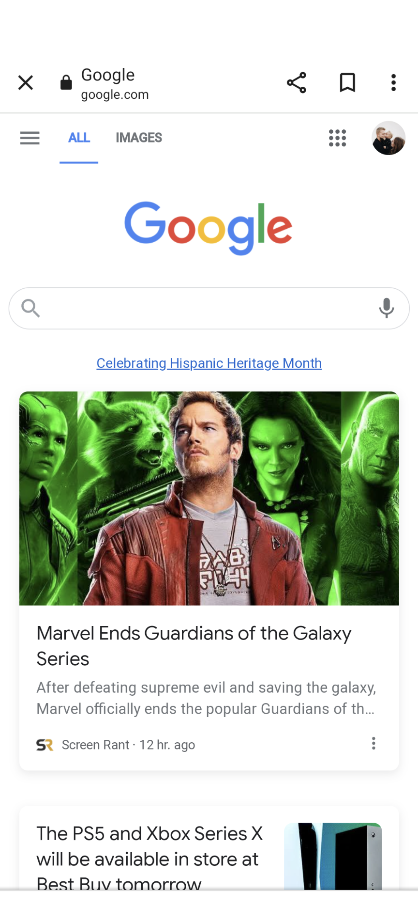
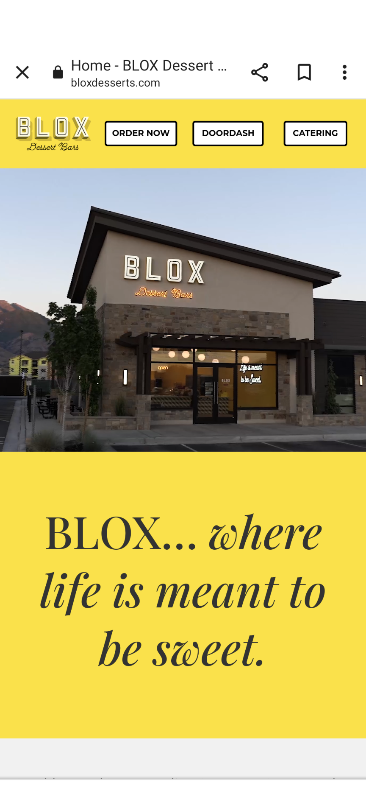

White Space and Clean Design
Example of White Space: Google
www.google.com

This site does a great job with white space. You can easily tell that the main function of google is to use the search bar.
Secondary to that below you can see popular ads that are applicable to my interests. Google is simple and full of open space.
PARC: Proximity
Example of Proximity: Target
target.com
Target has a mobile site that does a great job at fitting a bunch of information into a small space. Yet you can still see what
is important on the page and differtiate the advertisements from the search bar and the different departments.
PARC: Alignment
Example of Alignment: Blox
bloxdesserts.com

This mobile site does a great job with alignment. The top links are especially heplful and easily found as the primary purpose for
the site. You can also see that they intentionally align all the advertisement video and their company name and moto in the center of the page.